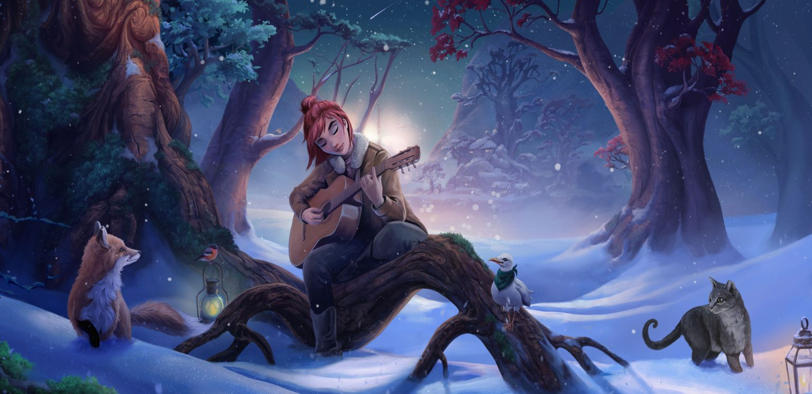

Life changed in a second for Lisa Peterson. Before: a happy go lucky girl sharing her passion of horses and close bond to her mother. When tragedy struck, Lisa searched for comfort in music and found her voice.
Lisa Peterson is an introvert who spent most of her formative years on the road. Only recently, after the move from Texas to Jorvik, has she formed deep connections with friends. She still loves the sense of freedom, of being alone with Starshine and having the wind blow through her hair.
„I hope to bring out the best in others with my music and actions.” - Lisa Peterson
As a performer, Lisa creates a feeling of intimacy whenever she takes the stage. Even if she were to play a stadium, her music brings the listener closer rather than projecting. Sometimes Lisa might joke about being a rock star, and as she matures, she gets more confidence on stage, but she doesn’t seek the spotlight. As she grows in popularity, it makes her smile to know that others are moved by and sing along with her lyrics.
Lisa has lived on Jorvik for not much more than a year, and she is determined to make this her home. She doesn’t want to be a wanderer anymore, which makes it awkward as she matures as a musician and realizes that her musical aspirations will require touring and leaving the home and friends she’s come to love.